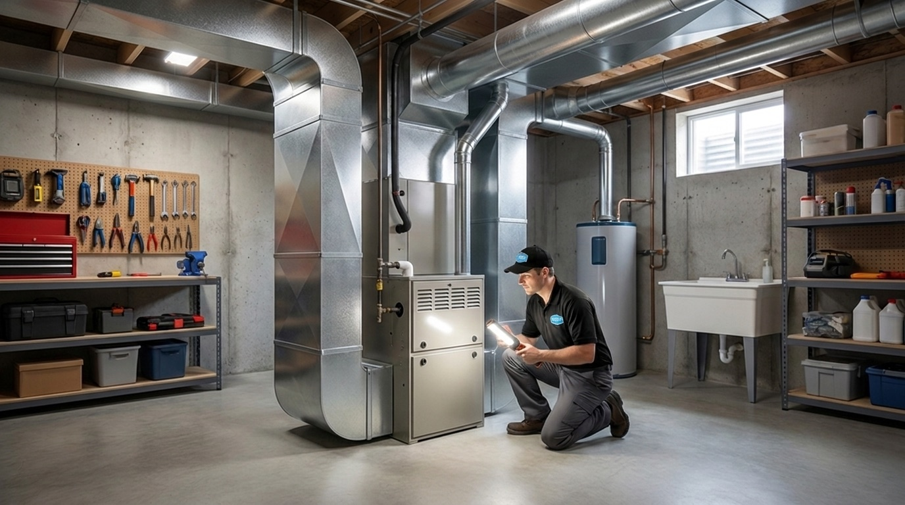
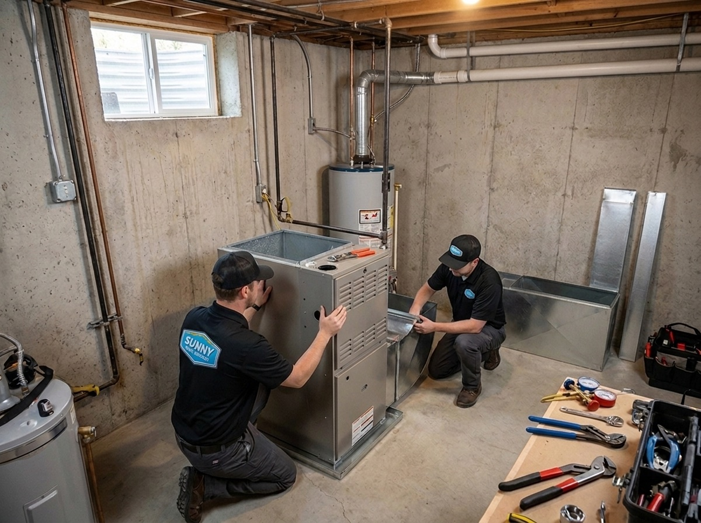
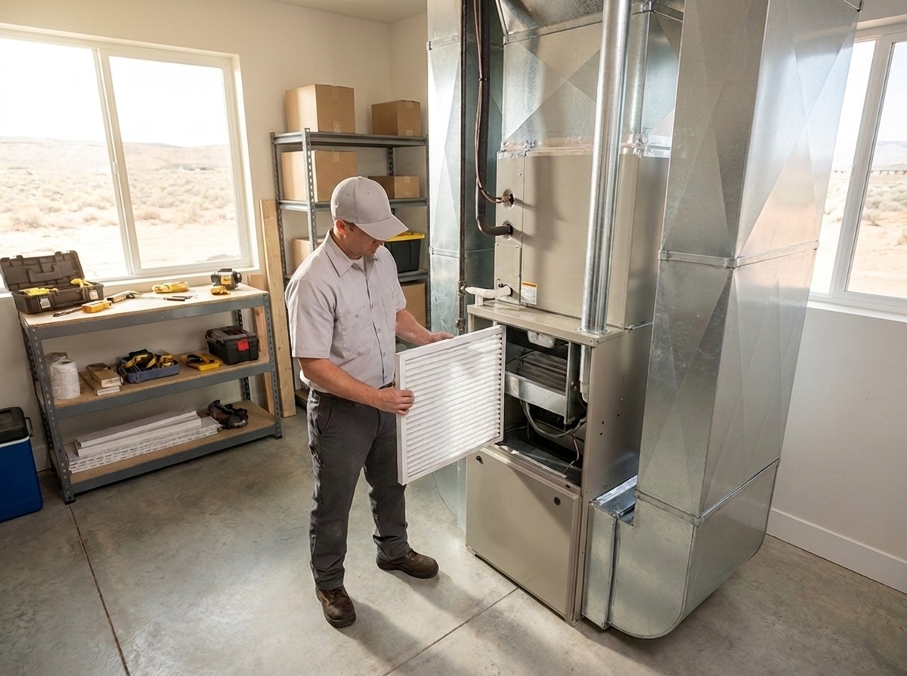
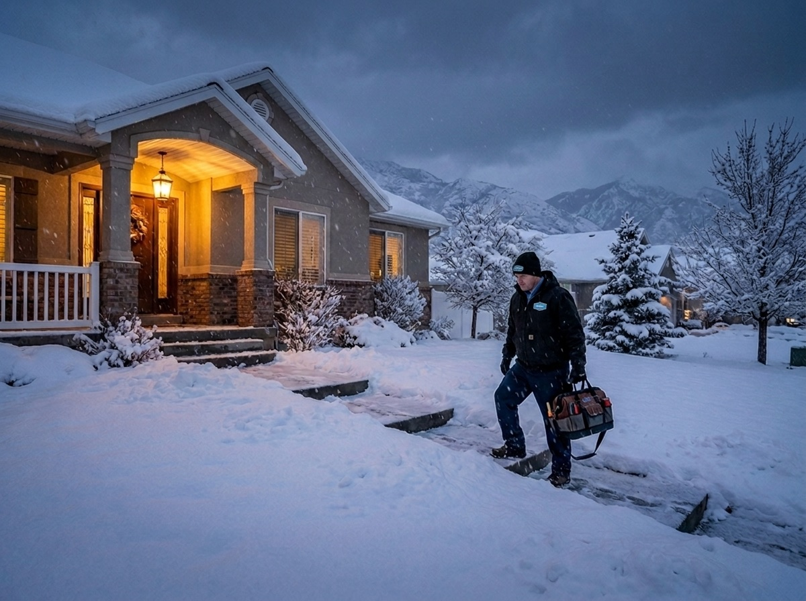
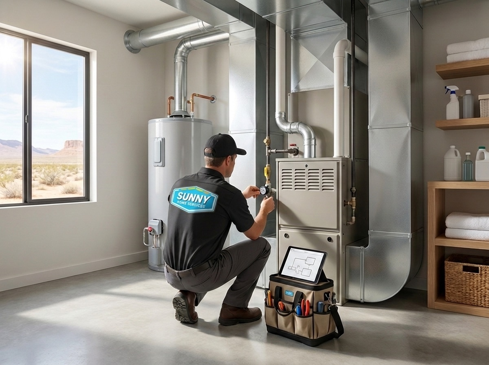

385.853.8116


When Wasatch Front sub-zero temperatures strike, the last thing you need is a heater broken in the house. If you’re looking for a dependable heating company in West Jordan, UT, count on the team at Sunny Home Services for expert heating solutions near you. From maintenance and installations to emergency heating repairs, our local heating contractors are always on hand to get your heating system running smoothly again.

While Wasatch Front temperatures can be unpredictable, you can count on Sunny Home Services to be here when you need us. As local HVAC experts, we’re knowledgeable and experienced in addressing the unique challenges of heating in West Jordan. From dramatic temperature swings to winter cold snaps, our climate knowledge sets us apart when it comes to creating long-term heating solutions for your home. We bring the personal touch of a family company and the dependability of a major HVAC retailer, so you can enjoy reliable scheduling, great customer service, and professional HVAC solutions in West Jordan and the surrounding communities.


At Sunny Home Services, we’re proud to serve our local community by providing a comprehensive selection of expert heating services near you. Whether you need emergency heating repairs in the middle of a West Jordan cold snap or preventative heater maintenance to shield your system against the strain of valley air pollution, our team of certified pros is here with local knowledge and solutions.

Whether you’re installing a new furnace or replacing a struggling heating system, we offer comprehensive heating installation for your West Jordan home. We’ll talk with you about your home, budget, and energy goals to help you find the perfect system, then install and test your new unit so you can enjoy a warm, comfortable space.
Learn More ›
If you notice issues such as furnace short cycling, foul odors, loud noises, or unexplained rising energy bills, it’s time to call the experts for professional heating repair. We service all furnace makes and models, as well as heat pumps and mini-splits, so you can always find the heating repair you need near you. A damaged home heater can pose a safety hazard and lead to more serious heater breakdowns if left unfixed, so it’s important to call for heating repairs promptly if you suspect an issue with your West Jordan heating system.
Learn More ›
Professional heater maintenance is the best way to keep your system running efficiently, extend your heater’s lifespan, and reduce the risk of costly heating repairs. It’s recommended to book professional heating preventative maintenance at least once a year to protect your heater or twice a year if you have a dual-function system like a heat pump or mini-split. It’s also important to clean HVAC filters at least once a month and replace them every three months to keep your indoor air clean and reduce strain on your HVAC system from valley air pollution.
Learn More ›
When heater emergencies strike, count on the team at Sunny Home Services for emergency heating repair in West Jordan. Our rapid dispatch team is always prepared so we can reach your home as soon as possible and get straight to work repairing your home heating system. We’ll provide you with a clear service window and a heads-up text before we arrive, so you’ll know exactly when the team is coming for your emergency heater repairs.
Learn More ›Find the perfect heating system for your home with our comprehensive selection of heater makes and models from top brands. Browse a wide selection of different furnaces, including Energy Star furnaces, to help you save on your monthly heating bills. Alongside traditional gas and electric furnaces, we also install and service heat pumps and ductless mini-splits for dual-function heating and cooling options. One of our knowledgeable team members would be happy to talk with you about your West Jordan home to help you find the right heating system. We’ll also talk to you about our current specials and promotions so you can enjoy even more savings on your next home heater service.

The climate in the Wasatch Front doesn’t make things easy for your heating system: intense cold snaps, temperature swings, and local air pollution strain it, making it essential to have a dependable company to fix your heater. Winters that regularly drop below freezing and significant temperature swings force your heating system to work hard to maintain a comfortable indoor temperature, which can accelerate wear and tear and shorten the system’s lifespan if your unit isn’t properly maintained. The mountains around West Jordan also trap air pollutants in the valley, which can affect your indoor air quality and HVAC system if HVAC filters aren’t regularly cleaned and changed.
In a climate like the Wasatch Front, your HVAC system needs more than just general knowledge. That’s why our team brings local knowledge and in-depth experience with West Jordan heating challenges, so we can provide you with long-lasting home comfort solutions. Alongside expert heating installations, we’ll talk to you about your heating system maintenance, answer any questions you have, and show you how to keep your system running smoothly through anything the Utah climate delivers.

From routine preventative maintenance to emergency heater repairs, Sunny Home Services is your go-to team of professional heating technicians in West Jordan, UT. We’re proud to serve our neighbors with expert heating solutions so you’ll never be stuck without heat during a Wasatch Front cold snap. Contact us today to speak with a team member about how Sunny Home Services can help keep your West Jordan home comfortable year-round.